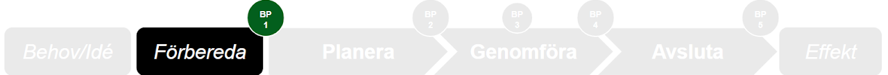
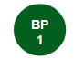

Vad projektet ska uppnå och varför
Vi behöver minska osäkerheten och analysera förutsättningarna för att genomföra projektet. En viktig del är att redan nu utse en mottagare som är redo och har resurser och budget att ta emot och hantera projektets resultat på lång sikt.
Förberedelserna mynnar ut i ett projektdirektiv. Syftet är att uppnå en gemensam förståelse för projektets innebörd och att ange dess ramar och klargöra de förväntningar som finns mellan beställare och projektledare.
Förarbetets omfattning
Förarbetet är av olika omfattning. Det finns tillfällen då vi redan har mycket kunskap — till exempel från tidigare projekt eller förstudier — och vi kan med en mindre insats fylla i projektdirektivet. Ofta sker förberedelsearbetet i linjen genom att beställaren undersöker och samlar in den information som behövs.
Förstudie?
Vid en större förändring, eller om många delar behöver undersökas djupare, kan förberedelserna genomföras i formen av en förstudie och då nyttjar vi uppdragsformen. Ofta vill beställaren förstå om ett kommande projekt går att genomföra, vad det kan uppnå och till vilka kostnader.

Om förberedelserna kommit fram till att ett projekt har förutsättningar att starta tas ett BP 1-beslut. Vem fattar beslut? Beställaren.
Vad ska finnas på plats för BP 1?
- Projektmål och effektmål finns på plats i ett projektdirektiv
- Finansiering av projektet är säkerställd
- Kompetenser och resurser för projektet är säkerställda
- Mottagare (ägarskap) är säkerställt
- Resultatet kan finansieras och resurssättas efter projektets slut
- En utsedd projektledare finns
- En utsedd styrgrupp finns
- Projektdirektiv är upprättat och beställt
Obligatoriska dokument
Verktyg i förberedelsefasen
Startsäkring innan projektet påbörjas — underlag och motivering till beslut.
Öppna mall →Checklistor
Beställaren
- Jag har förstått vad Linköpings kommuns projektmodell innebär
- Det finns en tydlig bild av vad projektet ska åstadkomma och varför
- Projektmålen är specifika, mätbara, accepterade, realistiska och tidsatta
- Projektet är väl avgränsat
- Mottagare och ägarskap av resultatet är säkrat, både resurser och finansiering
- Kompetenserna är resurssäkrade på en övergripande nivå
- Jag är beredd att leda en styrgrupp
- Den projektledare som utses har kunskap, tid och mitt förtroende
Projektledaren
- Jag har förstått vad Linköpings kommuns projektmodell innebär
- Jag förstår vad projektet ska åstadkomma och vilka resurser som finns
- Projektets förutsättningar är rimliga och tillräckliga för att påbörja planeringen
Förberedelse i lokalprojekt — viktigt att veta
I lokalprojekt med Lejonfastigheter sker förberedelsefasen i nära samspel med Lejonfastigheters utrednings- och förstudieprocess. Det är viktigt att rollerna är tydliga redan här.
Den viktigaste beslutspunkten i LF:s process
Lejonfastigheters viktigaste interna beslutspunkt infaller mellan programhandling och systemhandling. Här sker:
- Investeringsbeslut via framskrivning (Inv.forum → VD för 1–10 Mkr; presidie/styrelse för större belopp)
- Tecknande av hyresöverenskommelse med kommunen — reglerar vad, pris och tid; binder hyresgästen
- Kommunens motsvarande beslut (nämnd/KS)
- Intern överlämning från fastighetsutveckling till projektavdelning hos LF
Projektanmälan (LF internt)
Fastighetsutvecklingschefens gräns är 1 Mkr. Vid belopp ≤ 1 Mkr kombineras beslut och attestdelegering i samma flöde. Vid belopp > 1 Mkr fattas beslut i separat instans, och projektanmälan delegerar sedan attesträtten för det redan fattade beslutet.
Idag kallas "behov" ofta för "projekt" direkt — utredning, förstudie och program flödar ihop utan tydlig fasavskiljning tills investeringsbeslut fattas. Det vi arbetar mot i steg 1 av implementeringen är att etablera ett formellt projektstart där beställare, uppdrag och mandat är definierade.
Jag vill veta mer!
Uppskatta tidsåtgång med Lichtenbergmetoden
Det kan vara utmanande att ta fram en milstolpeplan utan att veta hur lång tid olika saker tar. Lichtenbergmetoden ger varje aktivitet en "mest trolig", "optimistisk" och "pessimistisk" tidsåtgång. Se verktyget under mallar.
Avgränsningar i ett projekt
Ett projekt tenderar att växa i komplexitet och omfattning. Exempel på avgränsningar:
- Projektet inkluderar inte breddinförande — det hanteras i separat projekt
- Projektet omfattar bara ett första steg för utvärdering
- Projektet gäller enbart de verksamheter som specificerats i projektplanen
Lär av andras projekt
Det finns stora fördelar i att undersöka om liknande initiativ redan har genomförts och vilka lärdomar som går att utvinna. Se Lessons learned.